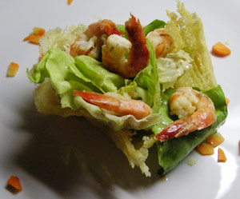

Crevettensalat in Parmesanschalen
4,5 von 6In einer Pfanne bei mittlerer Hitze den Parmesankäse zum Schmelzen bringen. Dabei den Käse wie einen Pfannkuchen in der Pfanne verteilen und darauf achten, dass keine Löcher entstehen. Von beiden Seiten leicht rösten und danach den geschmolzenen Parmesanpfannkuchen über eine Tasse oder ein Glas legen und abkühlen lassen. Salat in die Schalen geben und mit gebratenen Crevetten servieren.
